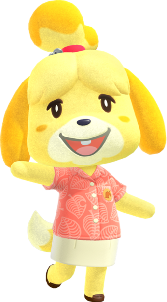

Contrairement à la croiyance, Tom Nook n'est pas un raton laveur mais un tanuki (mammifère carnivore de la famille des canidés). Dans Animal Crossing : New Horizons, il est à la tête de Nook Inc. et accompagne ses neveux Méli et Mélo dans leur mission d'encadrer et participer à la bonne vie des participants à son excursion.
Tom Nook est à la tête du bureau des résidents, où le joueur se rend afin de bricoler ou se procurer des objets vendus
par l'un des neveux de Tom Nook, servant à contribuer à l'évolution de son île.
C'est aussi lui qui est en charge des grandes constructions pour l'île comme les rampes ou les escaliers et qui gère les prêts
des résidents. Au début de chaque journée, il fait un discours où il annonce les événements de la journée jusqu'à l'amélioration
du bureau des résidents.
Une fois l'amélioration faite, Tom Nook pourra proposer au joueur de bâtir de nouvelles infrastructures comme des ponts et des rampes, déplacer des maisons et des bâtiments ou bien réserver des parcelles de terrain pour de futurs habitants.
Méli & Mélo sont deux jumeaux tanukis. Ils sont les employés de Tom Nook mais aussi ses neveux.
En début de partie, Méli & Mélo accueillent le joueur à l'aéroport, proposant à ce dernier la localisation de l'île et
la forme de cette dernière. Ils guideront ensuite le joueur à son arrivée sur l'île. Méli se promènera sur l'île, donnant
des conseils au joueur tandis que Mélo vendra des objets et rachète ce que le joueur lui donne.
Après que le joueur ait construit sa maison, Mélo proposera au joueur de les aider à construire leur propre boutique. Il demandera alors quelques matériaux à récupérer. Une fois les matériaux récupérés, il donnera au joueur un kit de construction de la boutique qu'il placera à un endroit de son choix. Une fois la boutique construite, Méli et Mélo s'y installeront et proposeront des meubles à la vente.
Marie est une chienne jaune et blanche inspirée de la race Shih Tzu.
Elle apparaît lorsque le bureau des résidents aura évolué en une sorte de mairie.
C'est à elle qu'il faut s'adresser afin de connaitre l'évaluation de l'île, changer l'hymne et le drapeau, ainsi que lui
faire part des problèmes rencontrés avec les résidents.
Quand la réputation de l'île atteint la note de cinq étoiles, Marie offre au joueur le plan de bricolage de l'arrosoir en or.
Elles est chargée de présenter le bulletin insulaire à chaque nouvelle journée. Si elle n'a aucune annonce à faire, elle vous
parlera de l'émission de télé qu'elle a regardé la veille ou encore de sa chaussette perdue.
Layette sera d'abord aperçue dans la Boutique Nook après sa construction. Puis, elle passera sur l'île du joueur deux ou
trois fois par semaine pour se "faire une clientèle". Elle vendra alors des vêtements et des accessoires sur la place principale.
Après avoir fait quelques achats et après que le bureau des résidents ait évolué en mairie, elle offrira au joueur un
kit de construction de la boutique. Lorsque la boutique des Sœurs Doigts de Fée sera construite, Layette s'installera sur
l'île du joueur définitivement avec sa sœur Cousette. Elle assiste le joueur lors de ses essayages en cabine et pour
la création de motifs pro.
Rounard sera d'abord aperçu aléatoirement sur l'île du joueur. En lui parlant, il proposera de lui vendre une œuvre d'art
pour 498 000 clochettes. Devant le refus du joueur, il lui proposera une ristourne de 4 980 clochettes. La première œuvre
qu'il vend est authentique et pourra servir à débloquer la section œuvres d'art du musée.
Après la rénovation du musée, Rounard revient régulièrement sur l'île du joueur, plus précisément sur sa plage secrète, avec
son bateau le Rounarama, où il y vend quatre œuvres d'art (originales ou contrefaçons) ainsi que deux meubles. Chaque œuvre
coûte 4 980 clochettes. Le joueur ne peut acheter qu'une seule œuvre à chaque fois.
Pour tout savoir sur Kéké, rendez-vous sur notre page des objectifs dans la rubrique : Faire venir Kéké Laglisse sur l'île.
Djason et Pollux sont des PNJ qui visiteront votre île de 5h du matin à 5h le lendemain (hors week end), une fois la mairie
ouverte.
Vous aurez la possibilité de commander une statue d’une espèce particulière de poissons ou d'insectes. Pour ce faire, il vous
faudra leur en fournir trois exemplaires. Si vous y parvenez, ils accepteront de créer une statue gratuitement pour vous.
Djason est très friand d’insectes et Pollux est un fan de pêche à tel point qu’ils seront prêt à vous acheter votre stock
pour 1,5 fois son prix à la Boutique Nook.
Bien que Djason ne pose aucune condition pour commencer à vous acheter des insectes, Pollux vous fera passer une épreuve à
chacune de ses visites avant de vous acheter des poissons. Il est également l'organisateur des tournois de pêche qui ont lieu
les 2ème ou 3ème samedi de chaque mois.